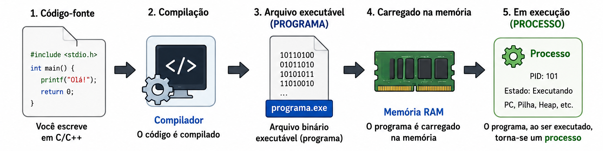
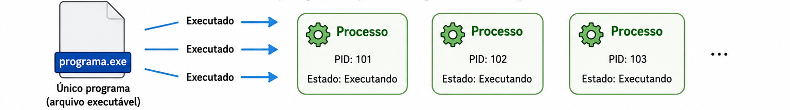
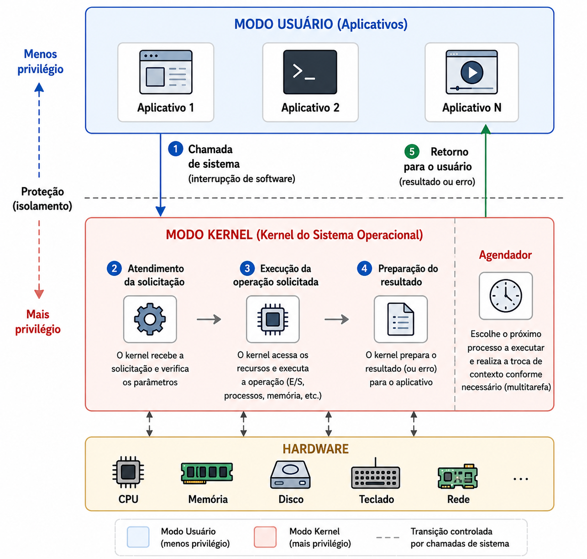
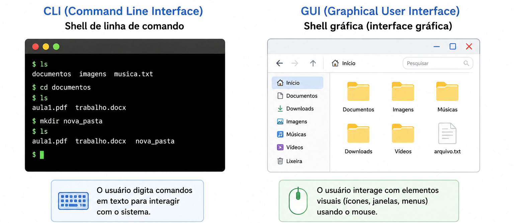

Um processo é um programa em execução. Quando escrevemos um código-fonte
em linguagens como C ou C++ e o compilamos, o compilador gera um arquivo binário executável.
Esse arquivo executável é chamado de programa. Quando ele é carregado na memória
e começa a ser executado, passa a ser chamado de processo.
Definição
Processo é a instância ativa de um programa em execução, com código,
dados, estado de execução e recursos associados.

Exemplo
O arquivo executável de um navegador instalado no computador é um programa. Quando você
abre o navegador, o sistema operacional cria um processo para executar esse programa.
Observação
Um mesmo programa pode gerar vários processos. Se um arquivo executável for aberto várias
vezes, o sistema operacional pode criar várias instâncias, isto é, vários processos em execução.

Programa versus Processo
Programa e processo são conceitos relacionados, mas não significam a mesma coisa.
O programa é uma entidade passiva, armazenada em disco. O processo é uma entidade ativa,
carregada na memória e controlada pelo sistema operacional durante sua execução.
Aspecto
Programa
Processo
Natureza
Entidade passiva.
Entidade ativa.
Onde fica
Normalmente armazenado em disco.
Carregado na memória principal durante a execução.
Estado
Não possui estado de execução.
Possui estado, contexto, recursos e informações de controle.
Exemplo
Arquivo editor.exe.
Editor aberto e em execução.
Como um Processo é organizado na Memória
Quando um processo está em execução, ele ocupa uma área da memória dividida em partes.
Cada parte tem uma função específica no funcionamento do programa.
Pilha
Parâmetros de função, endereços de retorno e variáveis locais.
Heap
Memória alocada dinamicamente durante a execução.
Dados
Variáveis globais e dados estáticos.
Texto / Código
Instruções executáveis do programa.
Principais áreas
Seção de texto ou código: contém as instruções executáveis do programa. Normalmente é uma área somente leitura.
Seção de dados: armazena variáveis globais e dados que existem durante a execução do processo.
Heap: área usada para memória alocada dinamicamente, conforme o programa precisa de novos espaços durante a execução.
Pilha: armazena dados temporários, como parâmetros de função, endereços de retorno e variáveis locais.
Exemplo
Em um programa que calcula uma soma, os valores temporários usados
podem ficar na pilha.
Gestão de Processos
A gestão de processos é uma função essencial do sistema operacional. Ela lida com a criação,
execução, agendamento, coordenação e finalização de processos, buscando usar a CPU de forma
eficiente e manter o bom desempenho do sistema.
Criação
O sistema operacional cria processos quando programas são iniciados.
Agendamento
O escalonador decide qual processo deve usar a CPU em cada momento.
Coordenação
Processos podem precisar compartilhar recursos ou se comunicar.
Finalização
Quando o processo termina, o sistema libera os recursos utilizados.
Observação
Sistemas de tarefa única são mais simples, pois executam apenas um processo por vez.
Sistemas de multiprogramação e multitarefa são mais complexos, pois vários processos
precisam compartilhar CPU, memória e dispositivos.
Quando processos ativos compartilham memória ou outros recursos, o sistema operacional precisa
controlar esse acesso com cuidado. A sincronização é necessária quando os processos interagem,
comunicam-se ou dependem uns dos outros.
Processos CPU-bound e I/O-bound
Os processos não usam os recursos do computador da mesma forma. Alguns exigem mais tempo de CPU,
enquanto outros passam mais tempo esperando operações de entrada e saída.
Processo CPU-bound
Um processo com uso intensivo de CPU requer mais tempo de processamento e passa mais tempo
em estado de execução.
Exemplo: compactação de arquivos, renderização de vídeo ou cálculo matemático pesado.
Processo I/O-bound
Um processo com uso intensivo de entrada e saída requer mais tempo esperando dispositivos,
como disco, teclado, rede ou impressora.
Exemplo: leitura de arquivos grandes, download pela rede ou impressão de documentos.
Componentes de um Sistema Operacional
Um sistema operacional possui componentes responsáveis por permitir a interação com o usuário
e o controle dos recursos do computador. Dois componentes fundamentais são o shell
e o kernel (núcleo).
Shell
É a camada mais externa do sistema operacional. Lida com a interação do usuário,
interpreta entradas e apresenta saídas.
InterfaceComandosInteração
Kernel
É o componente central do sistema operacional. Atua como principal interface entre
o sistema operacional e o hardware.
CPUMemóriaDispositivos
Observação
O usuário normalmente não acessa o hardware diretamente. Ele interage com o shell,
o shell envia solicitações ao sistema, o kernel controla os recursos e o hardware executa
as operações físicas.
Kernel
O kernel é a parte central de um sistema operacional. Ele atua como uma ponte entre
os aplicativos de software e o hardware do computador.
Ele gerencia recursos como CPU, memória e dispositivos, garantindo que diferentes partes
do sistema funcionem em conjunto de forma eficiente e segura. Também executa tarefas como
rodar programas, acessar arquivos e conectar-se a dispositivos como impressoras e teclados.
Definição
Kernel é o núcleo do sistema operacional. Ele controla recursos críticos
do computador e permite que os programas usem o hardware por meio de interfaces seguras.
Funções do Kernel
O kernel é responsável por diversas funções críticas que garantem o funcionamento do sistema.
Gestão de processos
Controla a criação, execução, troca e finalização de processos.
Gerenciamento de memória
Aloca e libera memória, gerencia memória virtual, proteção e compartilhamento.
Gerenciamento de dispositivos
Controla dispositivos de entrada e saída por meio de drivers.
Sistema de arquivos
Gerencia operações com arquivos e oferece interface para os aplicativos.
Gerenciamento de recursos
Controla tempo de CPU, espaço em disco, memória e largura de banda da rede.
Segurança
Aplica permissões, autenticação e controle de acesso.
Comunicação entre processos
Facilita a troca de informações entre processos.
Funcionamento do Kernel
O kernel é a primeira parte do sistema operacional carregada na memória durante a inicialização
e permanece residente enquanto o sistema estiver em execução.
Ele opera em modo privilegiado, também chamado de modo kernel.
Esse modo é separado do modo usuário, usado pelos aplicativos. Essa separação
impede que programas comuns acessem diretamente o hardware ou recursos críticos.

Etapas básicas
O aplicativo faz uma solicitação ao kernel por meio de uma chamada de sistema ou interrupção de software.
O kernel alterna do modo usuário para o modo kernel.
O kernel executa a operação solicitada, como entrada e saída de arquivos, criação de processos ou alocação de memória.
Ao concluir, o kernel retorna o resultado ou uma mensagem de erro para o espaço do usuário.
O kernel realiza troca de contexto quando necessário, permitindo a multitarefa. A troca de contexto é o mecanismo do
Kernel do Sistema Operacional que salva o estado de um processo atual para pausá-lo e carrega o estado de um novo processo para retomá-lo.
Observação
A troca de contexto ocorre quando o sistema operacional salva o estado de um processo
e carrega o estado de outro. Isso permite alternar rapidamente entre processos.
Shell
O shell permite que os usuários interajam com o sistema operacional. Ele atua como uma ponte
entre o usuário e o kernel, traduzindo entradas do usuário em ações executadas pelo sistema.
Shells podem ser baseados em linha de comando ou em interfaces gráficas.
Definição
Shell é a interface usada para enviar comandos ao sistema operacional
e receber respostas. Pode ser textual, como uma linha de comando, ou gráfico, com janelas,
ícones e menus.
Exemplo
Quando um usuário digita um comando no terminal para listar arquivos, o shell interpreta
o comando e solicita ao kernel a execução da operação correspondente.
CLI versus GUI
Existem diferentes formas de interação com o sistema operacional. Duas das mais comuns são
a interface de linha de comando e a interface gráfica.
Shell de Linha de Comando
A CLI, ou Command-Line Interface, fornece uma interface textual
em que os usuários digitam comandos para executar tarefas específicas. Ela é leve, rápida
e muito usada por desenvolvedores e administradores de sistemas.
Interface Gráfica
A GUI, ou Graphical User Interface, permite interagir com o sistema
usando janelas, ícones, menus, botões e ponteiro do mouse, sem necessidade de digitar comandos
para todas as ações.

Aspecto
CLI - Interface de Linha de Comando
GUI - Interface Gráfica
Forma de interação
Comandos digitados pelo usuário.
Janelas, ícones, menus e botões.
Facilidade para iniciantes
Exige conhecimento técnico e memorização de comandos.
Mais intuitiva para iniciantes por usar elementos visuais.
Consumo de recursos
Leve, utiliza menos memória e processamento.
Consome mais recursos do sistema.
Velocidade em tarefas avançadas
Mais rápida e precisa para automação e tarefas complexas.
Pode ser mais lenta para tarefas repetitivas ou avançadas.
Uso comum
Administração de sistemas, servidores, scripts e desenvolvimento.
Uso cotidiano, navegação por arquivos, aplicativos e configurações visuais.
Observação
CLI e GUI não são opostas em todos os contextos. Muitos sistemas oferecem as duas opções:
a GUI para facilidade de uso e a CLI para controle avançado e automação.
Sistemas Operacionais Comuns
Existem vários sistemas operacionais, cada um com características próprias e áreas de uso mais
comuns.
Windows
Desenvolvido pela Microsoft. É usado em computadores pessoais, ambientes corporativos
e jogos.
macOS
Desenvolvido pela Apple. É usado em computadores pessoais, ambientes profissionais e áreas
criativas, como design, edição de vídeo e produção musical.
Linux
Criado por Linus Torvalds e mantido por uma ampla comunidade de código aberto, além de
organizações como Linux Foundation, Red Hat e Canonical. É muito usado em servidores,
centros de dados, desenvolvimento e também por usuários avançados.
Unix
Desenvolvido originalmente nos Laboratórios Bell da AT&T. Possui diversas versões
comerciais e de código aberto, sendo usado em servidores, estações de trabalho, pesquisa
e ambientes acadêmicos.
O que é código aberto?
Software de código aberto, ou open source, é aquele cujo código-fonte pode ser usado,
examinado, alterado e redistribuído por outras pessoas. Em geral, seu desenvolvimento ocorre
por colaboração aberta.
Exercícios de Revisão
Questões conceituais
Explique, com suas palavras, o que é um processo.
Qual é a diferença entre programa e processo?
Por que um mesmo programa pode gerar vários processos?
Como um processo é organizado na memória?
Por que a gestão de processos é importante para o sistema operacional?
Qual é a diferença entre processos CPU-bound e I/O-bound?
O que é o kernel?
Cite três funções do kernel.
Por que os aplicativos comuns não devem acessar diretamente o hardware?
Explique o fluxo: usuário → shell → kernel → hardware.